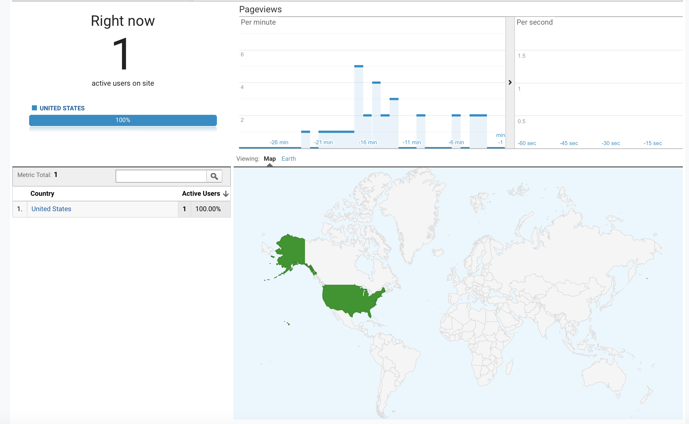
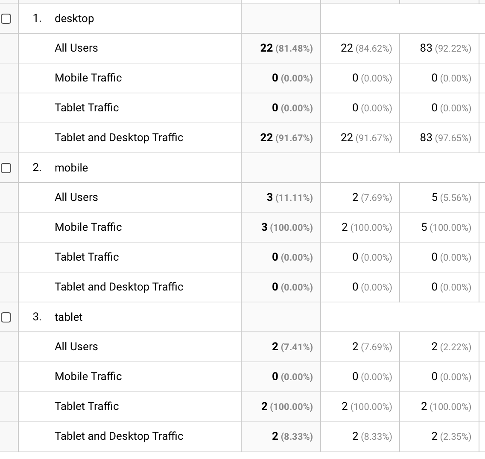
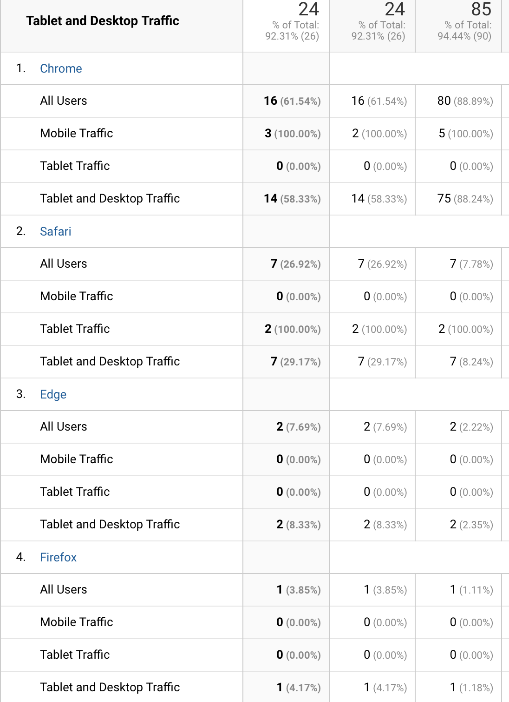

Adding Google Analytics
Welcome back to my blog!
This week we will investigate a developer’s tool called Google Analytics, a way to gain insight on a site’s performance. Each time a user enters a site Google begins to analyze the user's actions and collects data which is customized into sections such as age, popular used browser, behavior and user’s location to name a view.
Looks like someone is on my site now- How Fun!
My Thoughts
I wanted to test Google Analytics first before diving into the data from my user’s visits. I had my own guesses on who would be visiting my site and their behavior's, so I came up with a few theories.
- What is the most used, desktop, mobile, or tablet users?
- What is the most popular browser used to visit your site?
- What is the most popular page on your site?
- Location of most users?
I think the majority will be tablet users. Device Technology have become so advanced over the years, people would rather have something small and reachable than going into another room to use the desktop.
I would assume Safari would be the #1 browser, than in close second is Chrome. Apple has come a long way in the tech community and Facetime is its best feature. Many people like love ipads. All my family use Apple.
My guess would be, Week 3- Usability Test post would be the most viewed. This is when I started testing sites and devices. I had a good group of testers!
I think most users live in Washington State, like me. This is where my school resides and I’m sure most of the students as well. Next place, I guess would be in Maryland, where most of my family lives.
Results are in.... Google Analytics
The most used device on my site was the desktop!
The #1 browser used on my site was Chrome! I picked Safari, but that was second, I was close:)
Next we have the most visited page on my site and the winner is... Weeks 4 post on Mobile Usability Testing. I'm glad my users like when I bring in testers.

Lastly, Google Analysis was able to collect data from the users location while on my site. My guess was Washington State.
YES! WA is where most of my traffic is coming in and Maryland was right behind. I'm glad to see my family visiting my work:)
Summary
Google Analytics has proven to be a useful tool to help developers and website business owners identify user traffic. With this data coming in everyday developers can make the necessary changes to produce more traffic and see firsthand how users move around there site. This data collects much more than I have shown you in this post. There are many reports such as a Bounce Rate which is the percentage of people who only visited one page on your site before they “bounced” somewhere else. I highly suggest using this resource!